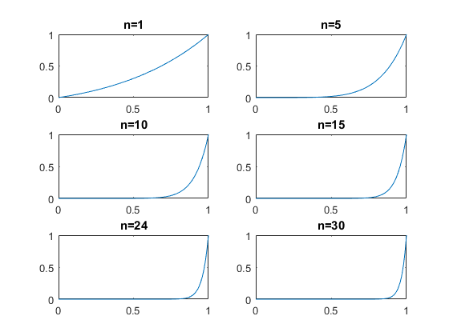

Ex 8 (2. Algorithms)
Contents
Integrals with plots
F=@(x,n)x.^n.*exp(x-1);
t=0:0.01:1;
subplot(321), plot(t,F(t,1)), title('n=1')
subplot(322), plot(t,F(t,5)), title('n=5')
subplot(323), plot(t,F(t,10)), title('n=10')
subplot(324), plot(t,F(t,15)), title('n=15')
subplot(325), plot(t,F(t,24)), title('n=24')
subplot(326), plot(t,F(t,30)), title('n=30')

b) Forward recurrence (error divided by n)
IF(1)=1/exp(1)
for k=2:10
IF(k)=1-k*IF(k-1);
end
IF =
Columns 1 through 6
0.36788 0.26424 0.20728 0.17089 0.14553 0.1268
Columns 7 through 10
0.11238 0.10093 0.091612 0.083877
b) Backwards recurrence (error multiplied by n)
IB(50)=0
for k=50:-1:2
IB(k-1)=(1-IB(k))/k;
end
format short g
(IF:IB)'
IB =
Columns 1 through 6
0.36788 0.26424 0.20728 0.17089 0.14553 0.1268
Columns 7 through 12
0.11238 0.10093 0.091612 0.083877 0.077352 0.071773
Columns 13 through 18
0.066948 0.062732 0.059018 0.055719 0.052771 0.05012
Columns 19 through 24
0.047723 0.045545 0.043557 0.041736 0.040062 0.038517
Columns 25 through 30
0.037086 0.035758 0.034523 0.033369 0.032291 0.03128
Columns 31 through 36
0.03033 0.029437 0.028594 0.027799 0.027046 0.026334
Columns 37 through 42
0.025657 0.025015 0.024404 0.023823 0.023268 0.022739
Columns 43 through 48
0.022233 0.021749 0.021286 0.020842 0.020417 0.020008
Columns 49 through 50
0.019615 0
ans =
0.36788
Exact value (best option, using matlab)
F=@(x,n)x.^n.*exp(x-1);
for k=1:50
IB(k)=integral(@(x)F(x,k),0,1);
end
IB(k)
ans =
0.019238
Errors